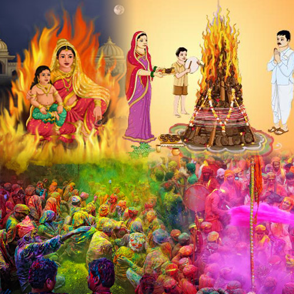
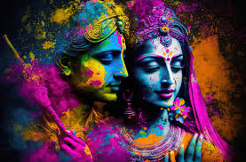

In ancient times, Hiranyakashipu was a very powerful king of the Asuras. It is considered that his brother was killed by Lord Vishnu. In order
to take revenge for that, he prayed hard to God and gained the boon that he would neither be killed by humans nor by animals; he would neither
be killed on earth nor in water or the sky; he would neither be killed in the daytime nor at night; he would neither be killed indoors nor
outdoors; he would neither be killed by Astra nor by Sastra.
By gaining this boon and many other powers, he started considering himself invincible and became so arrogant that he started punishing anyone
who didn't agree to pray to him as God. But his own son, Prahalad, denied accepting him as God and started praying to Lord Vishnu. Knowing
this, the king decided to kill his own son with the help of his sister, Holika. As Holika was immune to fire, she sat in it with Prahalad
in her lap. With God's grace, her immunity was transferred to Prahalad, and she burned to ashes. Immediately after that, Lord Vishnu
appeared in the form of Narsimha (half human and half lion); it was evening time. He took Hiranyakashipu to his doorstep and killed him
with his nail by placing him on his lap.
Since then, that day has been celebrated as a symbol of the victory of good over evil.

It is considered that Lord Krishna and Radha used to live in Brij, a region in northern India. Krishna is considered to have a dark skin color,
and Radha has a very fair skin color. Both had been in love since childhood, but one day Krishna asked his mother, Yashoda, if Radha would marry
him even if he did not have the same skin color as her. At that time, Yashoda put various different colors on Krihna's body and asked him to
identify his skin color. Krishna got his answer, and in the joy of that, he colored the skin of all his friends as well as that of Radha.
That day, the entire village played with colored powder, and there were colors everywhere.
Since then, on that day, everyone has colored others, irrespective of whether they are known or unknown, friend or enemy, young or old,
as a symbol of unity and love.